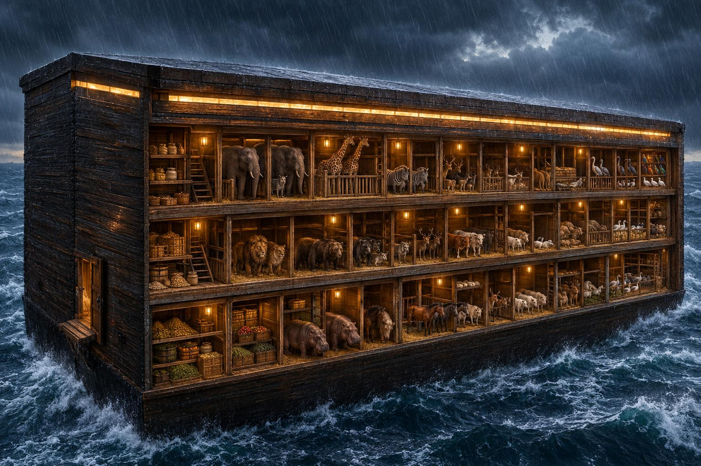

Ce que dit le texte, verset par verset
| Élément | Le verset | Précision de Rachi |
|---|---|---|
| Le bois | « Fais-toi une arche en bois de gofer » (6:14) | Gofer est son nom. Rachi rattache ce bois au mot gofrit (soufre), en lien avec la destruction décrétée |
| Les compartiments | « Tu feras l'arche en kinim » (6:14) | Des cellules séparées pour chaque bête et chaque animal |
| L'enduit | « Tu l'enduiras de poix, à l'intérieur et à l'extérieur » (6:14) | Kofer est la poix en araméen. Ici, à cause de la force des eaux, elle est mise à l'intérieur et à l'extérieur |
| Les dimensions | 300 coudées de long, 50 de large, 30 de haut (6:15) | Le texte donne ces trois mesures, sans commentaire de Rachi |
| La lumière | « Tu feras un tsohar à l'arche » (6:16) | Soit une fenêtre, soit une pierre précieuse qui les éclairait |
| Le toit | « Tu la finiras à une coudée par le haut » (6:16) | Le toit était en pente et se resserrait jusqu'à une coudée, pour que l'eau s'écoule de chaque côté |
| La porte | « Tu mettras la porte de l'arche sur son côté » (6:16) | Rachi précise que c'était pour que la pluie ne tombe pas dedans |
| Les étages | « Des étages inférieurs, deuxièmes et troisièmes » (6:16) | Trois niveaux l'un sur l'autre : en haut pour l'homme, au milieu pour les animaux, en bas pour les déchets |
| Les occupants | Noé, ses fils, sa femme et ses belles-filles ; deux de chaque espèce (6:18-20) ; sept couples pour les animaux purs (7:2) | Selon le Midrash cité par Rachi, ceux qui n'avaient pas altéré leur espèce vinrent d'eux-mêmes, et Noé fit entrer ce que l'arche accueillait |
| La nourriture | « Prends de toute nourriture qui se mange, et amasse-la » (6:21) | – |
| La construction | « Noé fit tout ce que D.ieu lui avait ordonné » (6:22) | Rachi (6:14) : la construction dura 120 ans, pour que les gens le voient et l'interrogent, peut-être se repentiraient-ils |
D'après Genèse 6-7 et Rachi.
Ce que l'illustration reprend, et ce qu'elle interprète
| Détail | Dans l'image | Par rapport au texte |
|---|---|---|
| Trois étages | Visibles, avec des compartiments | Conforme (6:14, 6:16) |
| Porte sur le côté | En bas, sur la paroi de gauche | Conforme (6:16) |
| Lumière en haut | Une bande lumineuse sous le toit | Une façon de figurer le tsohar (fenêtre ou pierre lumineuse, comme dit Rachi) |
| Réserves de nourriture | Sacs, jarres et caisses dans les compartiments | Conforme (6:21) |
| Forme de caisse | Coque rectangulaire à fond plat, sans proue | Cohérent avec le mot teva (caisse), le texte ne donne pas de forme de bateau |
| Toit | Presque plat | Rachi décrit un toit en pente qui se resserre jusqu'à une coudée |
| Étage du bas | Animaux et réserves, comme aux autres étages | Selon Rachi, l'étage du bas était pour les déchets |
| Étage du haut | Animaux et réserves | Selon Rachi, l'étage du haut était pour l'homme |
| Proportions | Approximatives (vue en perspective) | Le texte donne 300 × 50 × 30 coudées, soit environ six fois plus long que large |
Ce que le texte ne dit pas
- La forme de la coque. Le mot teva désigne une caisse, c'est aussi le mot employé pour le panier de Moshé. Rien n'indique une proue ni une quille.
- La direction. Le texte ne parle ni de gouvernail, ni de voile, ni de rames : l'arche flotte, et c'est D.ieu qui la mène.
- La valeur de la coudée. Les estimations modernes donnent une longueur de l'ordre de 130 à 150 mètres, selon la valeur retenue pour la coudée. Ce chiffre est une estimation et non une donnée du texte.
- La nature du tsohar. Fenêtre ou pierre précieuse : Rachi cite les deux avis sans trancher.
- Le détail de l'aménagement. Comment les animaux étaient répartis, la ventilation et l'évacuation des déchets ne sont pas décrits : c'est le champ du Midrash et de la tradition.
À retenir
La Torah donne trois choses précises : les matériaux (bois de gofer, poix), le plan (dimensions, trois étages, porte latérale, tsohar) et les occupants avec leur nourriture. Rachi ajoute l'usage des compartiments, la fonction de chaque étage, la forme du toit, et la raison de ces 120 ans de travail : donner à la génération du déluge le temps de se repentir.